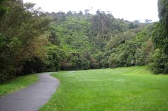

01
Bush Walk
Khandallah Park
Dense native bush and winding trails tucked above the suburb of Khandallah. Home to tūī, kererū and stunning harbour views.
© Photo: Khandallah.png — All rights reserved. Used for educational purposes only.